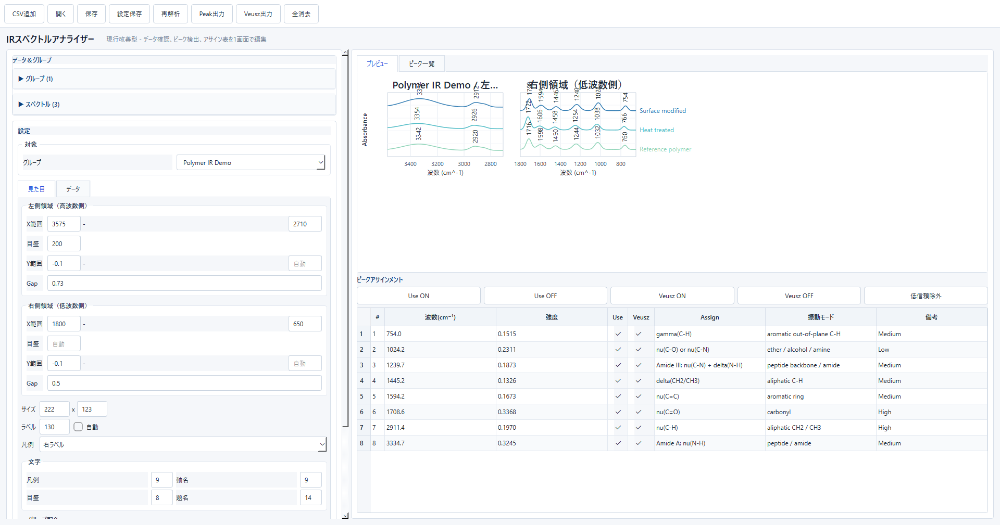
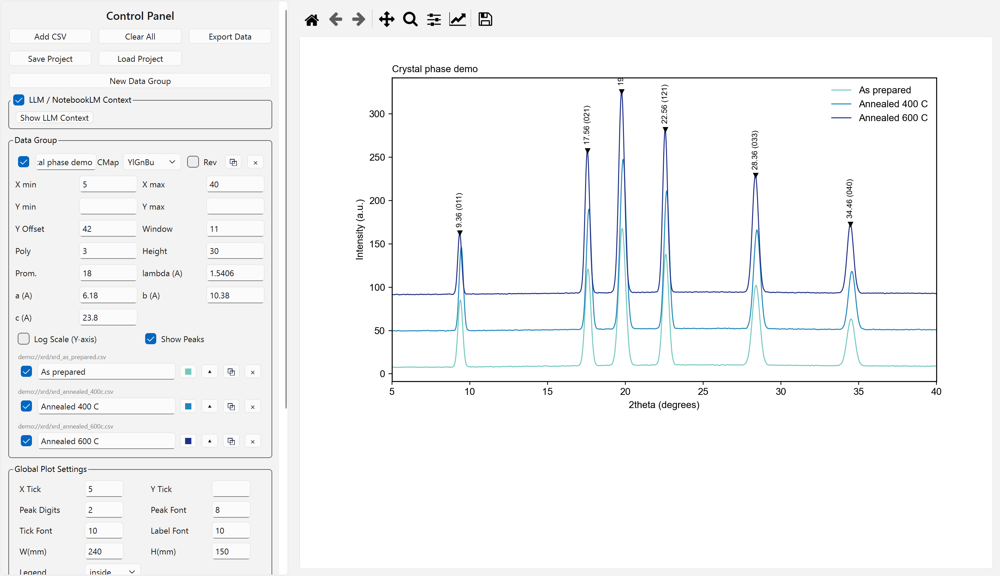

毎回同じデータ整理をしている
列の整形、不要行の除外、条件抽出、複数ファイルの集計などを手順化します。
武勝 / Data Tool Engineering
CSV・Excel・JSON・測定データの読み込み、整形、解析、グラフ化、出力まで。 PythonのGUI付きデスクトップアプリとして、毎回の手作業を実用ツールに変えます。
モックアップ表示中 外部サービスURLは未実装です。ココナラ相談ボタンは公開前の仮導線です。
Problem Fit
列の整形、不要行の除外、条件抽出、複数ファイルの集計などを手順化します。
研究・実験データの読み込みから、自動計算、判定、結果出力まで対応します。
ファイル選択、実行ボタン、条件入力、結果表示を備えたGUIにできます。
Scope
CSV、Excel、JSON、研究・実験で得られる測定データを扱います。
ルールに沿った加工、条件判定、自動計算、複数ファイル処理を組み込みます。
解析結果の確認、グラフ表示、画像出力、Excelへの結果反映に対応します。
専門知識がない方でも操作しやすい、Windows向けデスクトップアプリにできます。
Research Workflow / Prototype
IR・XRDの測定データを使い、読み込み、前処理、ピーク検出、比較、図表出力までを画面上で確認。 研究現場のデータ形式と作業手順に合わせて、実際に使える操作へ調整します。
背景画像は研究利用シーンのイメージです。実装済みアプリの画面は次のセクションで確認できます。
Working Prototypes / Actual UI
実際に制作したWindows向けデスクトップアプリへ模擬スペクトルを読み込み、解析を実行した画面です。 入力形式、解析条件、グラフ、出力項目は研究テーマに合わせて設計できます。

IR Spectrum Analysis
高波数・低波数領域を分けて比較し、検出ピークと帰属候補を同じ画面で編集できます。

XRD Diffraction Analysis
複数条件の回折パターンをオフセット表示し、ピーク位置、結晶子サイズ、HKL候補を解析できます。
掲載画面のスペクトルと数値は、機能・表示確認のために生成したサンプルデータです。
Flow
作りたいもの、現在の作業、入力データ、希望出力を確認します。
必須機能、任意機能、今回は含めない機能を切り分けます。
小さく動く形を作り、処理内容と操作感を確認します。
合意仕様に沿って仕上げ、実行手順や納品形式を整えます。
Pricing
CSV・Excelの読み込み、整形、解析補助、結果出力を目的に合わせて専用ツール化します。
+15,000円
+20,000円
+25,000円
+10,000円
+10,000円
+5,000円
Estimate
分かる範囲で大丈夫です。サンプルデータがあると、見積りと試作が進めやすくなります。
Start Small
仕様が完全に固まっていなくても、現在の作業手順と希望する出力が分かれば相談できます。